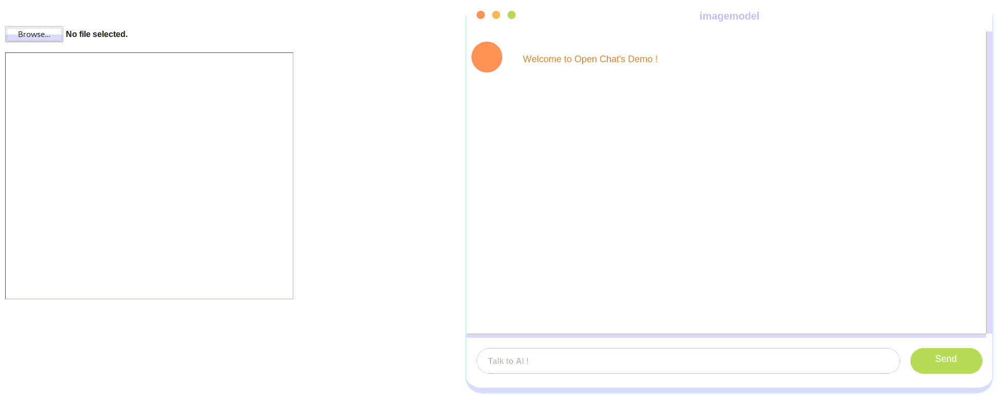
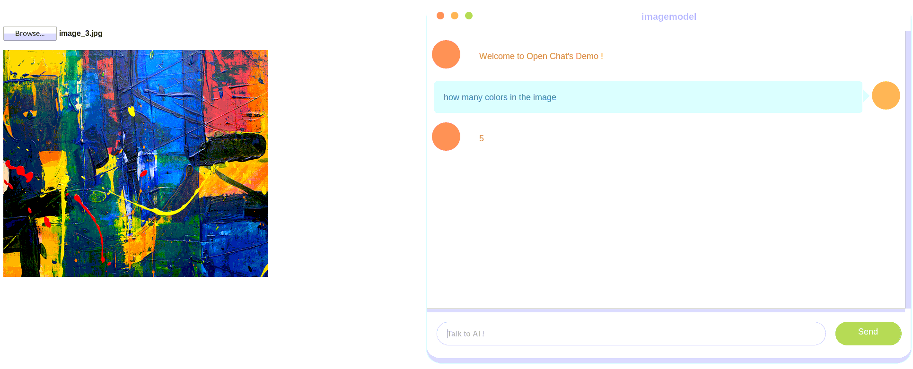

1: Inference and train with existing models and datasets
MIX-Kalman provides multiple existing models in Model Zoo, and supports multiple standard datasets, including VQA, GQA, OCR-VQA, RefCOCO, VCR, VisDial,etc. This note will show how to perform common tasks on these existing models and standard datasets, including:
Use existing models to inference.
Test existing models on existing datasets.
Train predefined models on existing datasets.
Inference with existing models
We provide a visual interface which can show the inference process and result intuitively, use the VQA task (read text in images and answer questions) as an example.
The demo inference with the existing trained models(i.e. LXMERT model) and the operating procedures are as follows:
download the pretrained model weight file of LXMERT here and put it in the directory
MIX-Kalman/openchat/openchat/model_pth/；set all paths in
config.py, including pre-training model checkpoint, image, feature extraction files and so on.set the model name in the file
MIX-Kalman/openchat/start_demo.py；OpenChat(model="vqa_model", env=WebDemoEnv())
run the demo scripts and get the website of interface.
python start_demo.py
then you can get the website
127.0.0.1:8080.click on the website, it will show the visual interface.

click on the button
Browseto choose an image in your computer for inference.then ask questions in the dialog box, and it will give you an answer.

Test existing models on existing datasets
MIX-Kalman provides multiple existing models in Model Zoo, use LXMERT as an example. LXMERT support three downstream tasks, choose VQA as an example. Before test the LXMERT model on VQA task, you should do the following two steps:
download the necessary data file according to the source code paper;
download the existing model pth file according to the LXMERT readme.
Prepare datasets
In MIX-Kalman, we directly use the extracted feature files refer to the source code paper. The steps are as follows:
Download the feature and annotation files like
train.json,trainval_ans2label.json,train2014_obj36.tsvand so on. You can download the data file according to the original paper or source code of LXMERT;put all those files outside the project directory and symlink the dataset root to
MIX-Kalman/configs/_base_/datasets/lxmert/lxmert_vqa.pyas below;data_root = '/home/datasets/mix_data/lxmert/' feature_path = 'mscoco_imgfeat/' annotation_path = 'vqa/' ...
If your folder structure is different, you may need to change the corresponding paths in config files.
MIX-Kalman
├── configs
│ ├── _base_
│ │ ├── datasets
│ │ │ ├── lxmert
│ │ │ │ ├── lxmert_vqa.py
Prepare model checkpoint
Download the LXMERT model pth file and save it in the directory tools/work_dirs/. You can change the path in MIX-Kalman/configs/_base_/default_runtime.py.
Model pth file is available here. Download the pretrained weights of the existing model in advance, in case the unstable network.
Test existing models
Assume that you have already finished the two steps. We provide testing scripts for evaluating an existing model on the whole dataset. The following testing environments are supported:
single GPU
single node multiple GPUs
Run the script tools/run.py and set the proper parameters to perform testing depending on the testing environment.
usage: run.py [-h] [--config-file FILE] [--resume-from RESUME_FROM]
[--load-from LOAD_FROM] [--eval-only] [--build-submit]
[--gpus GPUS] [--machines MACHINES]
[--node-rank NODE_RANK] [--work-dir WORK_DIR]
[--seed SEED] [--master-port MASTER_PORT]
[--master-addr MASTER_ADDR]
There are some key arguments, including:
–-config-file: set the train config file path;--eval-only: once you set it, it means test mode;--load-from: only loads the model weights;--gpus: set the number of GPU.
Refer to tutorial1 to see the script parameter in detail.
Examples
Test LXMERT model and VQA task through single machine. Config and model checkpoint file is available here.
#single node and single GPU
python tools/run.py \
--config-file configs/lxmert/lxmert_vqa.py \
--eval-only \
--load-from ./work_dirs/lxmert_vqa.pth \
--gpus 1
#single node and multiple GPUs(4)
python tools/run.py \
--config-file configs/lxmert/lxmert_vqa.py \
--eval-only \
--load-from ./work_dirs/lxmert_vqa.pth \
--gpus 4
Note：
Either in train or test, you can set the batch size by modifying samples_per_gpu in the dataset config, which is as below:
train_data = dict(samples_per_gpu=2, ...)
test_data = dict(samples_per_gpu=2, ...)
Train predefined models on existing datasets
MIX-Kalman provides out-of-the-box tools for training models. This section introduce how to train predefined models (under configs) on existing datasets (i.e. VQA).
Note: According to the linear scaling rule, you need to set the learning rate proportional to the batch size if you use different GPUs or samples per GPU. For example:
lr=0.01 for 4 GPUs * 2 imgs/gpu; lr=0.08 for 16 GPUs * 4 imgs/gpu.
Prepare dataset
Training requires preparing dataset too. See section Prepare datasets for details.
Training on single node
We also use script tools/run.py to launch training jobs on a single GPU.
The basic usage is as follows.
python tools/run.py \
${CONFIG_FILE} \
[optional arguments]
There are some other key arguments:
--resume-from: resume from a previous checkpoint file.resume-fromloads both the model weights and optimizer status, and the epoch is also inherited from the specified checkpoint. It is usually used for resuming the training process that is interrupted accidentally.--load-fromonly loads the model weights;During training, log files and checkpoints will be saved to the working directory, which can be set by two methods:
specify
work_dirin theconfigs/_base_/default_time.pyfile;set
--work-dirargument in the script.
Optional arguments remain the same as stated above. Refer to Tutorial1 to see the script parameter in detail.
Examples
Train LXMERT model and VQA task through single machine. Config and model checkpoint file is available here.
#single node and single GPU
python tools/run.py \
--config-file configs/lxmert/lxmert_vqa.py \
--load-from ./work_dirs/lxmert_vqa.pth \
--gpus 1
# or
python tools/run.py \
--config-file configs/lxmert/lxmert_vqa.py \
--resume-from ./work_dirs/lxmert_vqa.pth \
--gpus 1
#single node and multiple GPUs(4)
python tools/run.py \
–-config-file configs/lxmert/lxmert_vqa.py \
--load-from ./work_dirs/lxmert_vqa.pth \
--gpus 4
# or
python tools/run.py \
–-config-file configs/lxmert/lxmert_vqa.py \
--resume-from ./work_dirs/lxmert_vqa.pth \
--gpus 4
Note：
Before training, you can set
by_iterin theconfigs/_base_/schedules/schedule***.pyto determinetrain by iterortrain by epoch.# by_iter = True # the train mode is by iter if true, is by epoch if annotated total_epochs = 8 # the num of epoch
Also you can set the
eval_periodin the dataset config to determine the evaluation frequency whentrain_by_iter.eval_period set to 0 means disable evaluation;
when the you choose train by epoch mode, it will evaluate the model every epoch in default.
test_data = dict( ... eval_period=5) # evaluate the model every 5 batchs in train_by_iter mode.
Training on multiple nodes
MIX-Kalman relies on torch.distributed package for distributed training. Thus, as a basic usage, one can launch distributed training via PyTorch’s launch utility.
Examples
Train LXMERT model and VQA task through single machine. Config and model checkpoint file is available here.
There is one other key argument: --node-rank: the rank of current node(unique per machine).
Optional arguments remain the same as stated above. Refer to Tutorial1 to see the script parameter in detail.
Examples
#machine0
python tools/run.py \
--config-file configs/lxmert/lxmert_vqa.py \
--load-from ./work_dirs/lxmert_vqa.pth \
--gpus 8 \
--node-rank 0 \
--machines 2 \
--master-addr 'tcp://' \
--master-port 8889 [--other-flags]
#machine1
python tools/run.py \
--config-file configs/lxmert/lxmert_vqa.py \
--load-from ./work_dirs/lxmert_vqa.pth \
--gpus 8 \
--node-rank 1 \
--machines 2 \
--master-addr 'tcp://' \
--master-port 8889 [--other-flags]